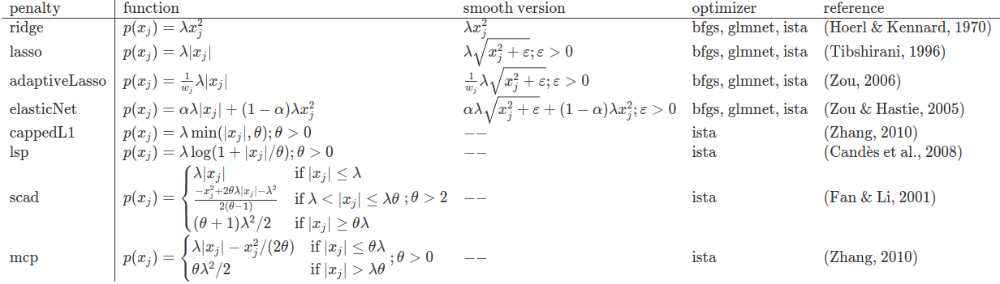

lessSEM (lessSEM estimates sparse SEM) is an R package for regularized structural equation modeling (regularized SEM) with non-smooth penalty functions (e.g., lasso) building on lavaan. lessSEM is heavily inspired by the regsem package and the lslx packages that have similar functionality. If you use lessSEM, please also cite regsem and and lslx!
The objectives of lessSEM are to provide …
- a flexible framework for regularizing SEM and
- optimizers for other SEM packages which can be used with an interface similar to
optim.
Important: Please also check out the implementations of regularized SEM in the more mature R packages regsem and lslx. Finally, you may want to check out the julia package StructuralEquationModels.jl.
The following penalty functions are currently implemented in lessSEM:

The column “penalty” refers to the name of the function call in the lessSEM package (e.g., lasso is called with the lasso() function). Smooth functions are called with smoothLasso, smoothAdaptiveLasso, and smoothElasticNet. These are only implemented for the comparison of exact and approximate optimization and should not be used. They will be marked as deprecated soon. The best model can be selected with the AIC or BIC. If you want to use cross-validation, use cvLasso, cvAdaptiveLasso, etc. instead (see, e.g., ?lessSEM::cvLasso). The smooth versions are called cvSmoothLasso, etc.
regsem, lslx, and lessSEM
The packages regsem, lslx, and lessSEM can all be used to regularize basic SEM. In fact, as outlined above, lessSEM is heavily inspired by regsem and lslx. However, the packages differ in their targets: The objective of lessSEM is not to replace the more major packages regsem and lslx. Instead, our objective is to provide method developers with a flexible framework for regularized SEM. The following shows an incomplete comparison of some features implemented in the three packages:
| regsem | lslx | lessSEM | |
|---|---|---|---|
| Model specification | based on lavaan | similar to lavaan | based on lavaan |
| Maximum likelihood estimation | Yes | Yes | Yes |
| Least squares estimation | No | Yes | No |
| Confidence Intervals | No | Yes | No |
| Missing Data | FIML | Auxiliary Variables | FIML |
| Multi-group models | No | Yes | Yes |
| Stability selection | Yes | No | No |
| Mixed penalties | No | No | Yes |
| Equality constraints | Yes | No | Yes |
| Parameter transformations | diff_lasso | No | Yes |
| Definition variables | No | No | Yes |
Because lessSEM is fairly new, we currently recommend using lslx for cases that are covered by both, lessSEM and lslx.
Installation
If you want to install lessSEM from CRAN, use the following commands in R:
install.packages("lessSEM")The newest version of the package can be installed from GitHub using the following commands in R:
if(!require(devtools)) install.packages("devtools")
devtools::install_github("jhorzek/lessSEM")Introduction
You will find a short introduction to regularized SEM with the lessSEM package in vignette('lessSEM', package = 'lessSEM'). More information is also provided in the documentation of the individual functions (e.g., see ?lessSEM::scad). Finally, you will find templates for a selection of models which can be used with lessSEM (e.g., the cross-lagged panel model) in the package lessTemplates.
Example
library(lessSEM)
library(lavaan)
# Identical to regsem, lessSEM builds on the lavaan
# package for model specification. The first step
# therefore is to implement the model in lavaan.
dataset <- simulateExampleData()
lavaanSyntax <- "
f =~ l1*y1 + l2*y2 + l3*y3 + l4*y4 + l5*y5 +
l6*y6 + l7*y7 + l8*y8 + l9*y9 + l10*y10 +
l11*y11 + l12*y12 + l13*y13 + l14*y14 + l15*y15
f ~~ 1*f
"
lavaanModel <- lavaan::sem(lavaanSyntax,
data = dataset,
meanstructure = TRUE,
std.lv = TRUE)
# Optional: Plot the model
# semPlot::semPaths(lavaanModel,
# what = "est",
# fade = FALSE)
lsem <- lasso(
# pass the fitted lavaan model
lavaanModel = lavaanModel,
# names of the regularized parameters:
regularized = c("l6", "l7", "l8", "l9", "l10",
"l11", "l12", "l13", "l14", "l15"),
# in case of lasso and adaptive lasso, we can specify the number of lambda
# values to use. lessSEM will automatically find lambda_max and fit
# models for nLambda values between 0 and lambda_max. For the other
# penalty functions, lambdas must be specified explicitly
nLambdas = 50)
# use the plot-function to plot the regularized parameters:
plot(lsem)
# use the coef-function to show the estimates
coef(lsem)
# The best parameters can be extracted with:
coef(lsem, criterion = "AIC")
coef(lsem, criterion = "BIC")
# elements of lsem can be accessed with the @ operator:
lsem@parameters[1,]
# AIC and BIC for all tuning parameter configurations:
AIC(lsem)
BIC(lsem)
# cross-validation
cv <- cvLasso(lavaanModel = lavaanModel,
regularized = c("l6", "l7", "l8", "l9", "l10",
"l11", "l12", "l13", "l14", "l15"),
lambdas = seq(0,1,.1),
standardize = TRUE)
# get best model according to cross-validation:
coef(cv)
#### Advanced ###
# Switching the optimizer #
# Use the "method" argument to switch the optimizer. The control argument
# must also be changed to the corresponding function:
lsemIsta <- lasso(
lavaanModel = lavaanModel,
regularized = paste0("l", 6:15),
nLambdas = 50,
method = "ista",
control = controlIsta(
# Here, we can also specify that we want to use multiple cores:
nCores = 2))
# Note: The results are basically identical:
lsemIsta@parameters - lsem@parametersTransformations
lessSEM allows for parameter transformations which could, for instance, be used to test measurement invariance in longitudinal models (e.g., Liang, 2018; Bauer et al., 2020). A thorough introduction is provided in vignette('Parameter-transformations', package = 'lessSEM'). As an example, we will test measurement invariance in the PoliticalDemocracy data set.
library(lessSEM)
library(lavaan)
# we will use the PoliticalDemocracy from lavaan (see ?lavaan::sem)
model <- '
# latent variable definitions
ind60 =~ x1 + x2 + x3
# assuming different loadings for different time points:
dem60 =~ y1 + a1*y2 + b1*y3 + c1*y4
dem65 =~ y5 + a2*y6 + b2*y7 + c2*y8
# regressions
dem60 ~ ind60
dem65 ~ ind60 + dem60
# residual correlations
y1 ~~ y5
y2 ~~ y4 + y6
y3 ~~ y7
y4 ~~ y8
y6 ~~ y8
'
fit <- sem(model, data = PoliticalDemocracy)
# We will define a transformation which regularizes differences
# between loadings over time:
transformations <- "
// which parameters do we want to use?
parameters: a1, a2, b1, b2, c1, c2, delta_a2, delta_b2, delta_c2
// transformations:
a2 = a1 + delta_a2;
b2 = b1 + delta_b2;
c2 = c1 + delta_c2;
"
# setting delta_a2, delta_b2, or delta_c2 to zero implies measurement invariance
# for the respective parameters (a1, b1, c1)
lassoFit <- lasso(lavaanModel = fit,
# we want to regularize the differences between the parameters
regularized = c("delta_a2", "delta_b2", "delta_c2"),
nLambdas = 100,
# Our model modification must make use of the modifyModel - function:
modifyModel = modifyModel(transformations = transformations)
)Finally, we can extract the best parameters:
coef(lassoFit, criterion = "BIC")As all differences (delta_a2, delta_b2, and delta_c2) have been zeroed, we can assume measurement invariance.
Experimental Features
The following features are relatively new and you may still experience some bugs. Please be aware of that when using these features.
From lessSEM to lavaan
lessSEM supports exporting specific models to lavaan. This can be very useful when plotting the final model.
lavaanModel <- lessSEM2Lavaan(regularizedSEM = lsem,
criterion = "BIC")The result can be plotted with, for instance, semPlot:
Multi-Group Models and Definition Variables
lessSEM supports multi-group SEM and, to some degree, definition variables. Regularized multi-group SEM have been proposed by Huang (2018) and are implemented in lslx (Huang, 2020). Here, differences between groups are regularized. A detailed introduction can be found in vignette(topic = "Definition-Variables-and-Multi-Group-SEM", package = "lessSEM"). Therein it is also explained how the multi-group SEM can be used to implement definition variables (e.g., for latent growth curve models).
Mixed Penalties
lessSEM allows for defining different penalties for different parts of the model. This feature is new and very experimental. Please keep that in mind when using the procedure. A detailed introduction can be found in vignette(topic = "Mixed-Penalties", package = "lessSEM").
To provide a short example, we will regularize the loadings and the regression parameters of the Political Democracy data set with different penalties. The following script is adapted from ?lavaan::sem.
model <- '
# latent variable definitions
ind60 =~ x1 + x2 + x3 + c2*y2 + c3*y3 + c4*y4
dem60 =~ y1 + y2 + y3 + y4
dem65 =~ y5 + y6 + y7 + c*y8
# regressions
dem60 ~ r1*ind60
dem65 ~ r2*ind60 + r3*dem60
'
lavaanModel <- sem(model,
data = PoliticalDemocracy)
# Let's add a lasso penalty on the cross-loadings c2 - c4 and
# scad penalty on the regressions r1-r3
fitMp <- lavaanModel |>
mixedPenalty() |>
addLasso(regularized = c("c2", "c3", "c4"),
lambdas = seq(0,1,.1)) |>
addScad(regularized = c("r1", "r2", "r3"),
lambdas = seq(0,1,.2),
thetas = 3.7) |>
fit()The best model according to the BIC can be extracted with:
coef(fitMp, criterion = "BIC")Optimizers
Currently, lessSEM has the following optimizers:
- (variants of) iterative shrinkage and thresholding (e.g., Beck & Teboulle, 2009; Gong et al., 2013; Parikh & Boyd, 2013); optimization of cappedL1, lsp, scad, and mcp is based on Gong et al. (2013)
- glmnet (Friedman et al., 2010; Yuan et al., 2012; Huang, 2020)
These optimizers are implemented based on the regCtsem package. Most importantly, all optimizers in lessSEM are available for other packages. There are three ways to implement them which are documented in vignette("General-Purpose-Optimization", package = "lessSEM"). In short, these are:
- using the R interface: All general purpose implementations of the functions are called with prefix “gp” (
gpLasso,gpScad, …). More information and examples can be found in the documentation of these functions (e.g.,?lessSEM::gpLasso,?lessSEM::gpAdaptiveLasso,?lessSEM::gpElasticNet). The interface is similar to the optim optimizers in R. - using Rcpp, we can pass C++ function pointers to the general purpose optimizers
gpLassoCpp,gpScadCpp, … (e.g.,?lessSEM::gpLassoCpp) - All optimizers are implemented as C++ header-only files in lessSEM. Thus, they can be accessed from other packages using C++. The interface is similar to that of the ensmallen library. We have implemented a simple example for elastic net regularization of linear regressions in the lessLM package. You can also find more details on the general design of the optimizer interface in
vignette("The-optimizer-interface", package = "lessSEM").
References
R - Packages / Software
- lavaan Rosseel, Y. (2012). lavaan: An R Package for Structural Equation Modeling. Journal of Statistical Software, 48(2), 1-36. https://doi.org/10.18637/jss.v048.i02
- regsem: Jacobucci, R. (2017). regsem: Regularized Structural Equation Modeling. ArXiv:1703.08489 [Stat]. https://arxiv.org/abs/1703.08489
- lslx: Huang, P.-H. (2020). lslx: Semi-confirmatory structural equation modeling via penalized likelihood. Journal of Statistical Software, 93(7). https://doi.org/10.18637/jss.v093.i07
- fasta: Another implementation of the fista algorithm (Beck & Teboulle, 2009).
- ensmallen: Curtin, R. R., Edel, M., Prabhu, R. G., Basak, S., Lou, Z., & Sanderson, C. (2021). The ensmallen library for flexible numerical optimization. Journal of Machine Learning Research, 22, 1–6.
- regCtsem: Orzek, J. H., & Voelkle, M. C. (in press). Regularized continuous time structural equation models: A network perspective. Psychological Methods.
Regularized Structural Equation Modeling
- Huang, P.-H., Chen, H., & Weng, L.-J. (2017). A Penalized Likelihood Method for Structural Equation Modeling. Psychometrika, 82(2), 329–354. https://doi.org/10.1007/s11336-017-9566-9
- Huang, P.-H. (2018). A penalized likelihood method for multi-group structural equation modelling. British Journal of Mathematical and Statistical Psychology, 71(3), 499–522. https://doi.org/10.1111/bmsp.12130
- Jacobucci, R., Grimm, K. J., & McArdle, J. J. (2016). Regularized Structural Equation Modeling. Structural Equation Modeling: A Multidisciplinary Journal, 23(4), 555–566. https://doi.org/10.1080/10705511.2016.1154793
Penalty Functions
- Candès, E. J., Wakin, M. B., & Boyd, S. P. (2008). Enhancing Sparsity by Reweighted l1 Minimization. Journal of Fourier Analysis and Applications, 14(5–6), 877–905. https://doi.org/10.1007/s00041-008-9045-x
- Fan, J., & Li, R. (2001). Variable selection via nonconcave penalized likelihood and its oracle properties. Journal of the American Statistical Association, 96(456), 1348–1360. https://doi.org/10.1198/016214501753382273
- Hoerl, A. E., & Kennard, R. W. (1970). Ridge Regression: Biased Estimation for Nonorthogonal Problems. Technometrics, 12(1), 55–67. https://doi.org/10.1080/00401706.1970.10488634
- Tibshirani, R. (1996). Regression shrinkage and selection via the lasso. Journal of the Royal Statistical Society. Series B (Methodological), 58(1), 267–288.
- Zhang, C.-H. (2010). Nearly unbiased variable selection under minimax concave penalty. The Annals of Statistics, 38(2), 894–942. https://doi.org/10.1214/09-AOS729
- Zhang, T. (2010). Analysis of Multi-stage Convex Relaxation for Sparse Regularization. Journal of Machine Learning Research, 11, 1081–1107.
- Zou, H. (2006). The adaptive lasso and its oracle properties. Journal of the American Statistical Association, 101(476), 1418–1429. https://doi.org/10.1198/016214506000000735
- Zou, H., & Hastie, T. (2005). Regularization and variable selection via the elastic net. Journal of the Royal Statistical Society: Series B, 67(2), 301–320. https://doi.org/10.1111/j.1467-9868.2005.00503.x
Optimizer
GLMNET
- Friedman, J., Hastie, T., & Tibshirani, R. (2010). Regularization paths for generalized linear models via coordinate descent. Journal of Statistical Software, 33(1), 1–20. https://doi.org/10.18637/jss.v033.i01
- Yuan, G.-X., Ho, C.-H., & Lin, C.-J. (2012). An improved GLMNET for l1-regularized logistic regression. The Journal of Machine Learning Research, 13, 1999–2030. https://doi.org/10.1145/2020408.2020421
Variants of ISTA
- Beck, A., & Teboulle, M. (2009). A Fast Iterative Shrinkage-Thresholding Algorithm for Linear Inverse Problems. SIAM Journal on Imaging Sciences, 2(1), 183–202. https://doi.org/10.1137/080716542
- Gong, P., Zhang, C., Lu, Z., Huang, J., & Ye, J. (2013). A general iterative shrinkage and thresholding algorithm for non-convex regularized optimization problems. Proceedings of the 30th International Conference on Machine Learning, 28(2)(2), 37–45.
- Parikh, N., & Boyd, S. (2013). Proximal Algorithms. Foundations and Trends in Optimization, 1(3), 123–231.
Miscellaneous
- Liang, X., Yang, Y., & Huang, J. (2018). Evaluation of structural relationships in autoregressive cross-lagged models under longitudinal approximate invariance: A Bayesian analysis. Structural Equation Modeling: A Multidisciplinary Journal, 25(4), 558–572. https://doi.org/10.1080/10705511.2017.1410706
- Bauer, D. J., Belzak, W. C. M., & Cole, V. T. (2020). Simplifying the Assessment of Measurement Invariance over Multiple Background Variables: Using Regularized Moderated Nonlinear Factor Analysis to Detect Differential Item Functioning. Structural Equation Modeling: A Multidisciplinary Journal, 27(1), 43–55. https://doi.org/10.1080/10705511.2019.1642754
Important Notes
THE SOFTWARE IS PROVIDED ‘AS IS’, WITHOUT WARRANTY OF ANY KIND, EXPRESS OR IMPLIED, INCLUDING BUT NOT LIMITED TO THE WARRANTIES OF MERCHANTABILITY, FITNESS FOR A PARTICULAR PURPOSE AND NONINFRINGEMENT. IN NO EVENT SHALL THE AUTHORS OR COPYRIGHT HOLDERS BE LIABLE FOR ANY CLAIM, DAMAGES OR OTHER LIABILITY, WHETHER IN AN ACTION OF CONTRACT, TORT OR OTHERWISE, ARISING FROM, OUT OF OR IN CONNECTION WITH THE SOFTWARE OR THE USE OR OTHER DEALINGS IN THE SOFTWARE.